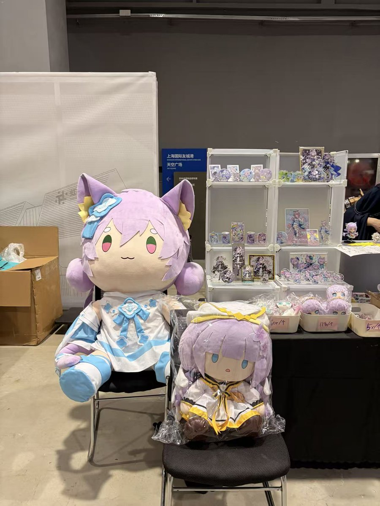
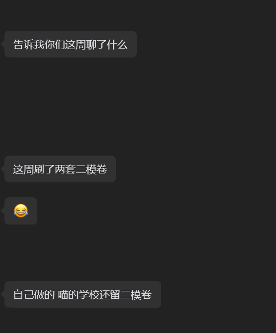
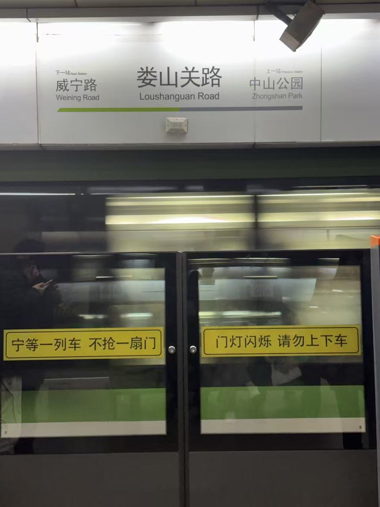
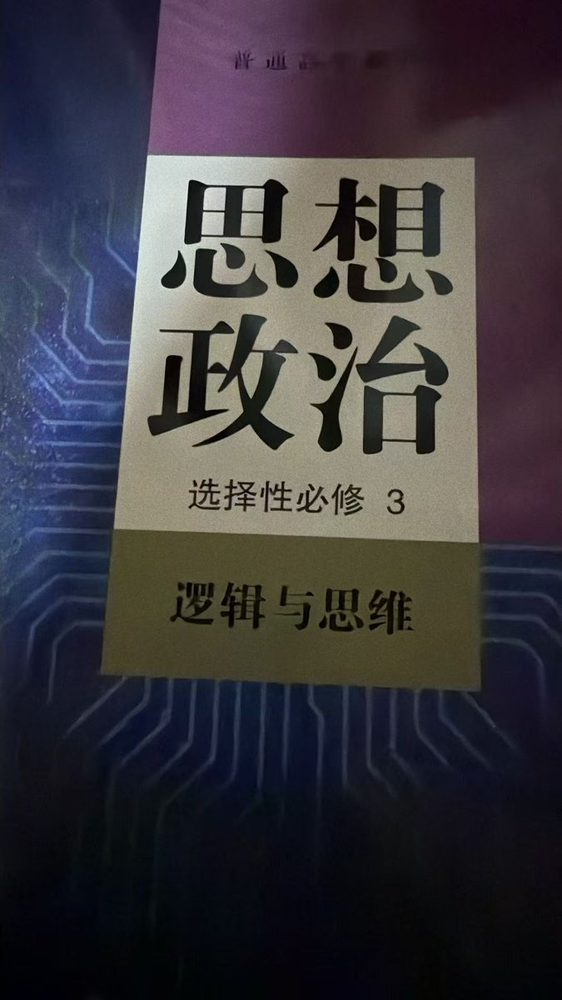
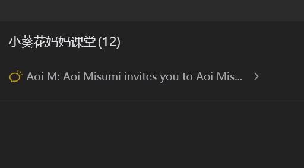
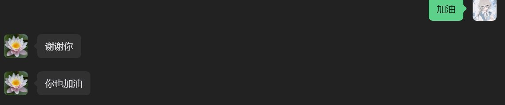
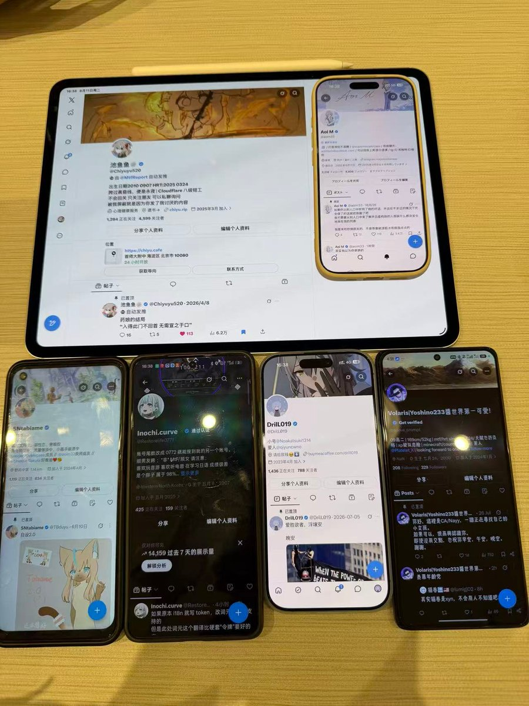

今年是我毕业后的第一个教师节。
说自己是教师，好像也没错——备课、上课、批改作业、研究试卷，遇上课堂上学生暴露出意料之外的知识漏洞，课后便回头翻教材、找资料，然后根据反馈回来的东西重新安排课程：这些全是老师该做的事。
可按世俗对 “老师” 的想象，我又不算。
我没有固定的讲台、办公室，没有教研组，没有编制，连个能长期冠在名字前的机构名称都没有。而我的一周又被分得七零八落：工作日白天备课、改材料、自己看书，晚上可能会有 @CyberKanjyousen 的课。但是从周五晚上起，时间就忽然被塞满，课一节接一节排到周日，过着早八晚十一的生活。
在这个过程中，我这个人也定不下来：在温州、杭州、上海之间辗转，由杭州东站或上海虹桥站开始，通过杭州地铁和上海地铁串联起来的亚朵、全季和汉庭的酒店都有我住过的房间，行李里真正不能少的只有那一台贴着瑞幸咖啡贴纸的戴尔的笔记本电脑 —— 学生的试卷、课程资料、错题集，还有我重新整理的语法笔记，全在里面，以及最重要的，我的 Claude，ChatGPT，还有和 kimi 一同写下的一份份教案，和腾讯会议这个软件。
过去一年，我待过机构，跑过小型辅导班，经历过合作，也经历过散伙。绕了一圈，剩下的东西反倒简单：自己的学生，自己的课程，一台电脑，一个微信群，到点就打开的腾讯会议，以及每个上课前的白天去往便利店现场打印出来的。如果非要给这种状态起个名，大概还是我常说的那句 ——“野路子猥琐发育”。
可是奇怪的是，恰恰是这种没什么正式名分的状态里，我第一次真切感觉到我在教书，这一年里，有太多事是从前的我没想过的。比如一个长期在班级中下游的初中生，后来考到了英语年级第一；比如 @tbduyu 刚找我时他刚结束高中入学考，而英语只七十分左右。后来在我们两人的共同努力下考到了一百三，现在连远超校内要求的，上海高考卷的阅读、语法甚至是英语专业八级的改错题，也能沉下心慢慢做完。
可是他真正打动我从来不是那六十分的提分。是他让我第一次发现自己的大问题：我的英语和日语，全靠多年输入一点点堆出来，几乎没正经背过单词表，也很少单独记语法规则，做题全是近乎本能的判断 ——“这个不对”“那个可以”“这句话读着有问题”。对我而言这足够了，可我的学生们总会问：
“为什么？”
这一下就难住了我。
我知道答案，却没法把脑子里下意识的判断路径拆解清楚，说清哪里该短句，从句的位置到哪里结束，多项定语的修饰顺序，名词短语的组成结构。这些在哪里决定了我们的选择之类的问题，我是会，但我不知道自己是怎么会的。
于是我只能反过来拆自己：去抠一个语法形式在句子里的功能，去析主句和从句的逻辑关系，去想一篇文章里，为什么某个空只能填这个词，而非另一个看似也通顺的选项。从前这些判断发生得太快，我从没认真看过；等到要讲给另一个人听时，它们才第一次慢了下来。
后来这些拆解的方法和，慢慢成了我课程里很重要的部分，我甚至专门写过一篇文章讲这件事。所以说这一年我教学上的变化，有相当一部分，是被学生一句接一句的 “为什么” 问出来的。我也因此越来越爱看学生变化的过程，在这其中分数的提升最显眼，@TBduyu 的英语单科成绩 从 70 变 130，从中下游变年级第一，数字写在试卷上，谁都看得懂。
可还有些变化没有数字。有人开始愿意说 “这里我没懂”，开始追问一句话为什么这么写，开始看清自己真正擅长什么，也慢慢明白：学习未必是坐着等别人评判对错。有时候我觉得他们在上课，有时候又觉得，他们只是借着一门语言，一点点认识自己。
@TBDuyu 是我最早的学生之一，后来有了 @milksu、@cyberkanjyousen、@drill019 、@MilkSU ，再后来又陆续来了其他人。他们大多不是从招生广告来的，很多出自推特，也有不少来自我的音游圈子 —— 通常是先认识我这个人，聊过一阵，知道我在做什么，某天忽然来问：“你是不是也上课？”这种招生方式很慢，可慢有慢的好处。我几乎从没遇过完全不想上课、只是被父母硬推来的孩子。
现在温州的学生以线下为主，线上的零零散散分布在全国各地，杭州、嘉兴、上海、盐城、佛山，甚至有些早已远赴英国还有些已经去苏州、哈尔滨、南昌读了大学。课多起来以后，@ShiseiOko 和 @AnselZhong 也开始帮忙做助教。
地图上的点变多了，可坐到电脑前，面对的还是一个一个具体的人。
有人备高考，有人学大学英语，有人学日语；有人已经能处理很复杂的材料，却会突然在一句基础语法上卡住。他们没有按同一种方式成长 —— 这件事我花了很久才真正接受。刚做课程的时候，总忍不住想找一套足够完整、漂亮又严密的方法，套给不同的学生。后来才发现，学生根本不按这套来。
有人缺知识，有人缺练习，有人其实什么都会，只是不知道自己会；还有些孩子的问题，一开始根本和英语没多大关系。他可能需要重新习惯提问，习惯说出自己的判断，习惯承认自己不会，也需要重新相信：一件事交到自己手里，是可以做完的。
以前读教育心理学，背过维果斯基、马斯洛、埃里克森，那些名字安安静静印在书上。直到真正上课才发现，他们一个个从书里走了出来。维果斯基说 “最近发展区”，从前是试卷上等着解释的术语，现在才懂：材料太简单，学生不需要你；材料太难，他连从哪下手都不知道。老师该出现的，就是中间那一点距离 —— 他暂时够不到，你托一把，就能够着。
所以我会给外省的学生做上海卷，也会把高中政治选择性必修三里的逻辑，拆进英语题里讲。他们一开始总问 “这俩有什么关系？”，做过几次，反倒不问了。马斯洛也变得具体：一个人在课堂里连基本安全感都没有，很难因为一句 “你该努力” 就爱上学习；一个长期做什么都被否定的人，“成为更好的自己” 对他而言太远了。
埃里克森也是。初高中的孩子当然会问下次考多少分，可他们同时也在问：我是什么样的人？我到底擅长什么？以后读什么专业？我为什么和别人不一样？这些理论我早就学过，当初家里催我考教师编制，我也做过教育理论的卷子，成绩并不算好。后来回头看才明白，当时很多题不会做，不全是我不懂，只是不知道用评分标准里的术语，写成标准答案。
那时候，理论在纸上；后来，理论坐到了我面前 —— 有姓名，有头像，会迟到，会交作业，会在屏幕那头突然问出一个让我停顿很久的问题。到这时候，我才觉得自己真的开始懂那些词的意思。
再往后，课堂里的事越来越容易超出一门语言。本来可能只是做一道选择题，从一个单词谈到一篇文章，再谈到学习习惯、大学、专业选择；有时候也会聊，为什么总觉得自己学不会，为什么看懂了却写不出来，为什么别人理所当然的学习方式，放到自己身上就不对。我原以为学生来找我，只是学英语、学日语、提分数，后来才知道，一堂课有时会走得很远，而我也跟着他们一起走。
过去这一年，其实谈不上顺利。遇上过教案和智力成果被挪用的事，和杭州一家教育科技公司的版权纠纷，几乎堵死了我进机构工作的路。后来走上独立教学，一半是自己选的，一半是当时没太多别的路。招生也冷过很长一阵，课程、材料都备好了，人坐在那儿，就是没有学生。我还推掉过上海一位老师的付费咨询，不是钱的问题，是聊过才发现，我们对教学的理解差得太远 —— 收了那笔钱，就意味着要替一种我不认同的方法做事。那阵子我也不知道，这件事最后会变成什么样。
后来有了 @TBduyu ，接着又是第二个，第三个。一些原本只在推特上见过的人来上课，有些学生又带来了自己的朋友。事情就是这样一点一点长出来的。
今年八月，趁着要去上海参加音游展的机会，我把那些只在屏幕里见过的学生一起约出来吃了个饭，挨个聊新学年的学习安排。那是我第一次同时看见他们本人 —— 平时只有头像和名字的人，忽然坐在真实的桌子旁，伸手拿饮料，低头看手机，说话的声音和耳机里没两样。我当时有点恍然。
但是也没那么顺。有学生家长不认可这种见面方式，我又花时间解释我在做什么、为什么这么做。这类解释好像总也少不了：解释为什么这么教，解释为什么不用常规方法，解释为什么某个孩子适合做这类题，解释我究竟算什么老师。
现在学生依然不算多，收入也没什么值得夸耀的。只是某天忽然发现，靠着教学和一些零散工作，我已经能承担生活里相当一部分支出了。
于是温州、杭州、上海之间的往返，慢慢从想象变成了日常：一张张车票，地铁里的换乘，临时落脚的房间，桌上摊开的电脑，到了约定的晚上，屏幕亮起，另一座城市的学生出现在那头。事情就这么继续着。白天我给学生讲英语阅读，告诉他该从哪里切分，晚上就轮到我自己坐在那儿，对着翻译材料发愁。学生在我面前卡住的时候，我太熟悉那种感觉了 —— 几个小时后，可能就轮到我卡住。这时候，“老师” 和 “学生” 的界线，会变得有点模糊。
过去一年栽过的跟头都还在：教案被拿走过，招生失败过，合作做不下去过，学生也流失过。从前回头看这些，总觉得是该从履历里抹掉的污点；现在再看，却发现很多后来留下来的东西，恰恰是从这些地方长出来的。因为教案出过事，我开始认真保护自己的教学成果；因为长期招不到学生，我开始认真分辨什么样的人适合我的课；因为课程失败过，才明白一套大纲在纸上写得再漂亮也没用，最终还是要落到具体的人身上。
他坐在那里，能不能听懂？下个星期还愿不愿意来？做错以后还敢不敢继续做？这些问题，远比一份课程大纲诚实。
这一年还有件事我一直记得。有个学生在高考结束，从我这儿正式结业后，把英语师范填进了志愿，后来顺利入学。 甚至 @TBduyu 之前都说过：
“老师，我是在遇见你之后，我才想去读英语师范的。因为你是我的榜样”
知道这件事的时候，我沉默了好一会儿。
因为我自己至今都常不知道，该怎么准确介绍自己的职业 —— 说老师，好像少了点正式的名分；说自由职业者，又好像漏掉了很多真实发生的事。可另一个人，因为认识我，因为一起上过一段时间的课，在十八九岁，甚至十四五岁的年纪，把 “英语教师” 写进了自己人生的下一段。
这件事有种很沉的重量。原来一堂课结束，并不意味着它真的结束了。
今年教师节，我身边有一群也不太像传统意义上 “学生” 的学生。他们会和我争论课程，会质疑我的判断，会把自己找到的资料丢给我，也会突然问出一些我答不上来的问题。有时候，最后被迫回去查资料、重新想一遍的人，是我。所以到今天，我仍然不太知道，究竟是谁在教谁。
我的学生们，他们一直在这里：
https://x.com/i/lists/2035749326925058314?s=20
我想起这一年里那些亮了又灭的屏幕，那些改了很多遍的试卷，那些从七十分走到一百三十分的数字，那些坐在上海的桌边、第一次从头像变成真人的学生，还有那个拖着行李在几个城市间来回跑，到了晚上就打开电脑的我自己。
如果一定要在今天给他一个称呼，那么姑且还是叫老师吧。
教师节快乐。
这篇文章写给过去这一年，也写给那些不像传统学生的学生，以及一个至今仍然不太像传统教师的老师
https://t.co/RIsvC4crKq
Article attached to this post
不是教师的教师，和不是学生的学生






